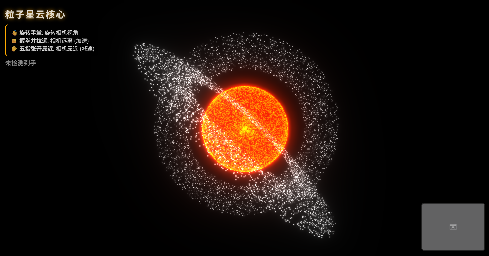
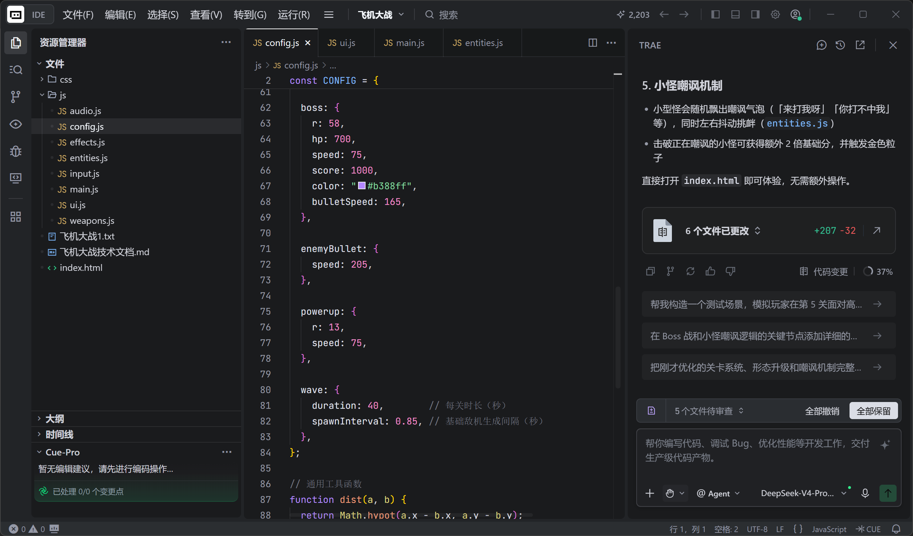
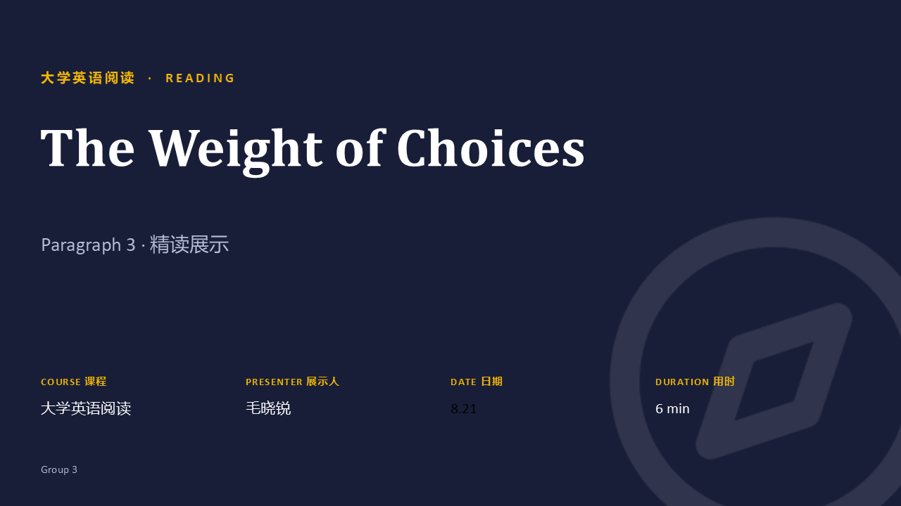
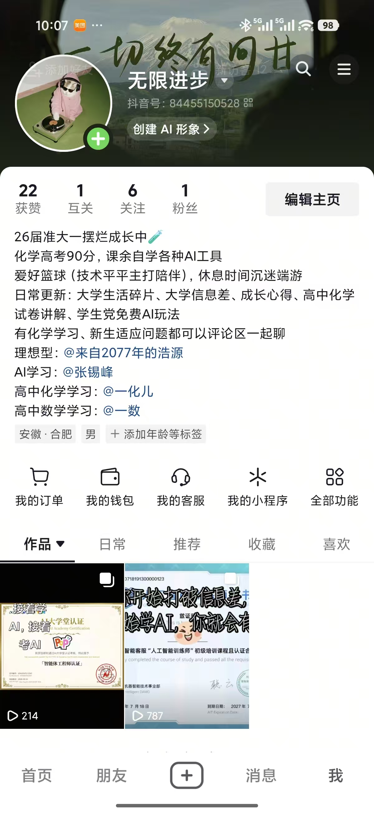
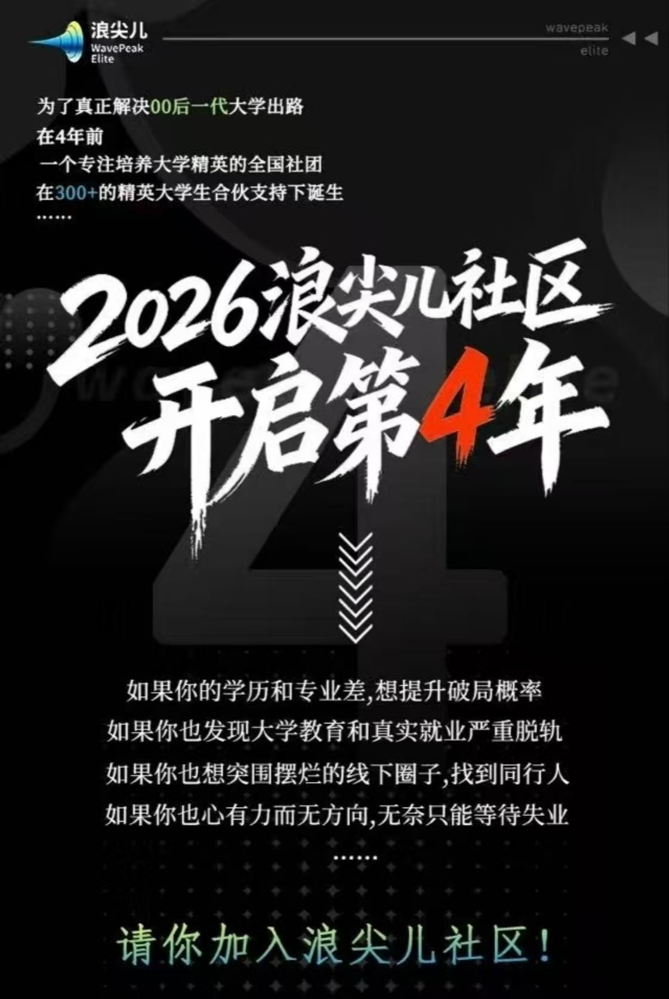

Creator
MXR Studio
Focus
MXR STUDIO · PERSONAL RESUME
AI · CODE · VISUAL · 无限进步
01 / 关于我
学习与生活 · 2026
我平时是什么样的人
我平时会关注 AI 的新工具，也喜欢自己试一试。
想到什么，我会尽量用 AI、代码或设计把它做出来。做的过程中会遇到不少问题，但边学边改，也能慢慢积累经验。
保持好奇，认真去做
有想法，就试着做出来。
任何时候，先相信自己，
然后无限进步。
02教育经历// EDUCATION
学校
淮南师范学院
专业
物理学（师范）
年级
大一
现在的状态
上好专业课，也在做一些课外尝试
03 / 创作经历
AI + 编程
尝试用 AI 和代码把想法做成网页

PPT 设计
做过比赛和接单作品，也还在继续学习

自媒体尝试
记录学习和生活，也练习内容表达

04 / AI 编程游戏作品
TANK BATTLE · BUILT WITH AI
32 关闯关 / 无限模式 / 随机道具
这是我用 AI 辅助编程做的一场坦克大战：不是把坦克放进地图就结束，而是让每一次移动、选择和冒险都能改变下一秒的局面。
从熟悉操作开始，逐关增加敌人、路线和空间压力，越往后越需要先观察，再开火。
没有固定终点，只有不断加码的战场。能走多远，取决于临场判断和你还剩多少耐心。
道具每局随机出现，地图也会随难度变得更复杂，让同一套操作不必重复同一种答案。
MY BUILD NOTE我想练习的不是“把游戏做出来”，而是让规则、反馈和一点点意外，共同长出真正好玩的节奏。
05 / AI 学习记录
CERTIFICATES · 2026
点击图片可放大查看
我会利用课余时间学习 AI 工具、云计算和相关应用，也会通过课程和考试检验自己的理解。
代表性证书 / 01
从基础概念开始，逐步了解人工智能的应用方式，也让我更愿意继续往下学习。
HUAWEI · MICRO CERTIFICATION06 / 运动与锻炼
SPORTS · RHYTHM · CONSISTENCY
在球场和路上，找回自己的节奏
我喜欢篮球，也会打乒乓球，平时尽量抽时间跑步。运动对我来说不是一项需要打卡的任务，而是把脑子里的杂音放下，让身体重新接管一天的方式。
我喜欢篮球的原因，不只是进球那一刻。一次次折返、卡位和传球，让我学会在混乱里找节奏，也习惯了落后时先把下一回合打好。
擅长 · 对抗 / 配合 / 找空间球很小，反馈却很快。判断落点、调整手感、接住下一板，这种短促而密集的专注，让我在快节奏里依然保持清醒。
喜欢 · 反应 / 变化 / 专注跑步没有观众，只有呼吸和脚步。跑到最后留下的不只是里程，还有把一件事安静做完的耐心。
坚持 · 呼吸 / 节奏 / 完成不追求每次都刷新纪录，先让下一次出发变得自然。
07 / 特别鸣谢
加入浪尖儿社区后，我接触到了不少课堂之外的内容，比如 AI 工具、实习准备、PPT 设计、视频剪辑和自媒体运营。社区里的分享也让我开始认真思考怎样安排大学生活、怎样与人沟通，以及以后想往哪个方向努力。

谢谢社区里认真分享经验、愿意回答问题的每一位伙伴。
课堂之外，也有很多值得学习的事。